Chapter 4: Docker Basics && Dockerfile Workshop (Using CentOS Stream 10)
Reviews:
What is Docker?
Docker is a platform that uses OS-level virtualization to package applications into containers. Think of it as lightweight, portable units that include everything needed to run software—code, libraries, dependencies, and configuration.
Key concepts: - Image: A read-only template or "blueprint" containing everything needed to run an application - Container: A runnable instance of an image—an isolated environment where the application actually runs
Docker vs. Virtual Machines
Unlike VMs that require a full operating system per instance, Docker containers share the host OS kernel. This makes containers: - Lighter (megabytes vs. gigabytes for VMs) - Faster to start (seconds vs. minutes) - More efficient with system resources
Why Use Docker?
- Environment consistency: Eliminates "it works on my machine" problems by providing identical environments everywhere
- Portability: Run containers on any system with Docker installed—from laptops to cloud servers
- Isolation: Containers run independently without interfering with each other
Assignment: Create Student's Submission along tutorial
- Student will submit Screen of Docker installation process according to step-by-step from manual.
- Student can use Basic Template Download or generate own version.
Using CentOS Stream 10 with Docker
If you want to use CentOS Stream 10 as your base image, here's how to find and use it:
Pre-built Images on Quay.io
visit Ref https://quay.io/organization/sclorg to review docker image.
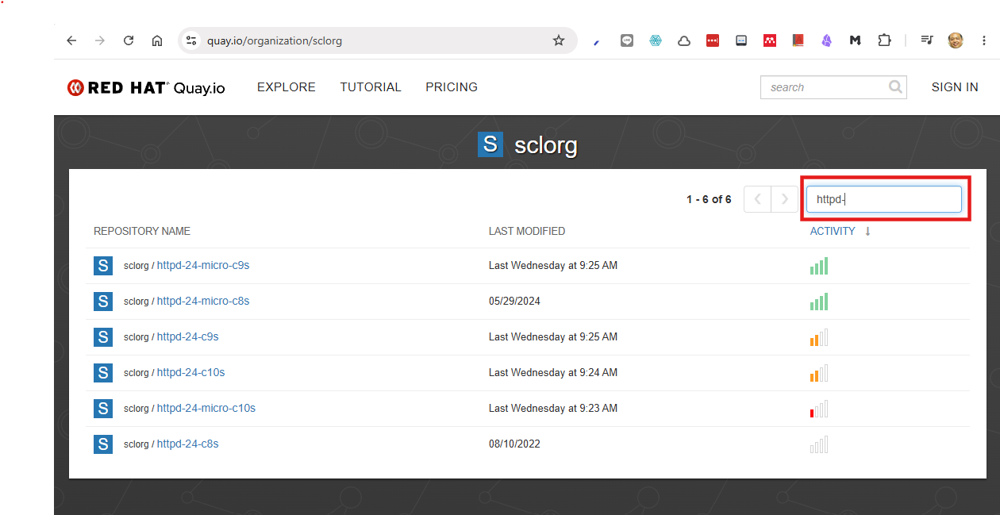
CentOS Stream 10 images are available on Quay.io (Red Hat's container registry). Examples include:
| Image Type | Registry Address |
|---|---|
| Apache HTTP Server | quay.io/sclorg/httpd-24-c10s |
| PostgreSQL 16 | quay.io/sclorg/postgresql-16-c10s |
| Node.js 22 | quay.io/sclorg/nodejs-22-c10s |
| Node.js 22 Minimal | quay.io/sclorg/nodejs-22-minimal-c10s |
| PostgreSQL 18 | quay.io/sclorg/postgresql-18-c10s |
| Mariadb | quay.io/sclorg/sclorgmariadb-118-c10s |
You can pull all of these images in table using:
- use command format docker pull <repo name/owner/image name>
docker pull quay.io/sclorg/postgresql-16-c10s
docker pull quay.io/sclorg/postgresql-16-c10s
docker pull quay.io/sclorg/nodejs-22-c10s
docker pull quay.io/sclorg/nodejs-22-minimal-c10s
docker pull quay.io/sclorg/postgresql-18-c10s
docker pull quay.io/sclorg/mariadb-118-c10s
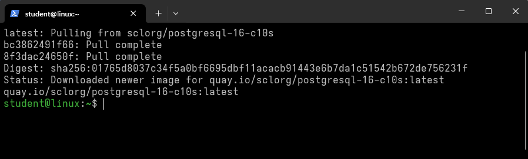
Note: *** pull all image with list in above tables and copy screen in templage.
- run command
docker image lsto verify successfully image from table
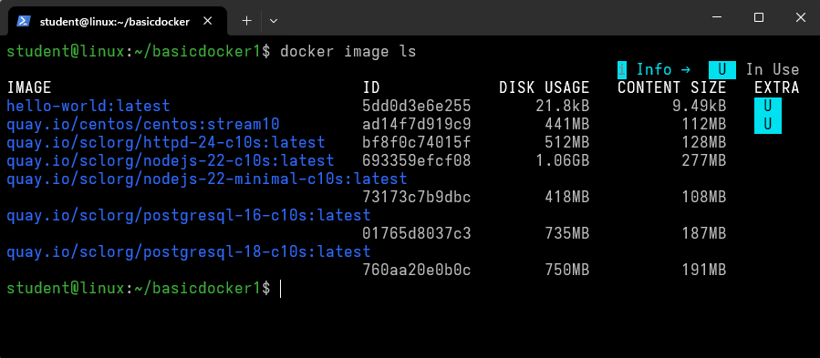
in Development, Container give developer high flexibility and Quick develop applicaion. you can have database without installation.
Part 1 Create MaraiDB (https://mariadb.org/)
Prepare: create project folder
mkdir myMariadb
cd myMariadb
1.1 create Dockerfile
cat > Dockerfile << 'EOF'
# Use the official SCLorg CentOS Stream 10 MariaDB 11.8 image
FROM quay.io/sclorg/mariadb-118-c10s
# Metadata labels (optional)
LABEL maintainer="your-email@example.com" \
summary="Custom MariaDB 11.8 with baked-in environment variables"
# Set environment variables for initialization
ENV MYSQL_ROOT_PASSWORD=root_secret \
MYSQL_DATABASE=app_db \
MYSQL_USER=app_user \
MYSQL_PASSWORD=user_secret
# Expose the default MariaDB port
EXPOSE 3306
EOF
ls -ll
output:
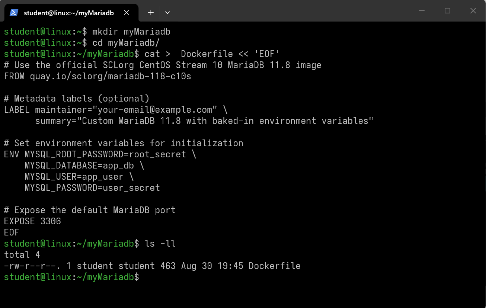
1.2 Build Image - Build mariadb database from Dockerfile
docker build -t my-mariadb-118 .
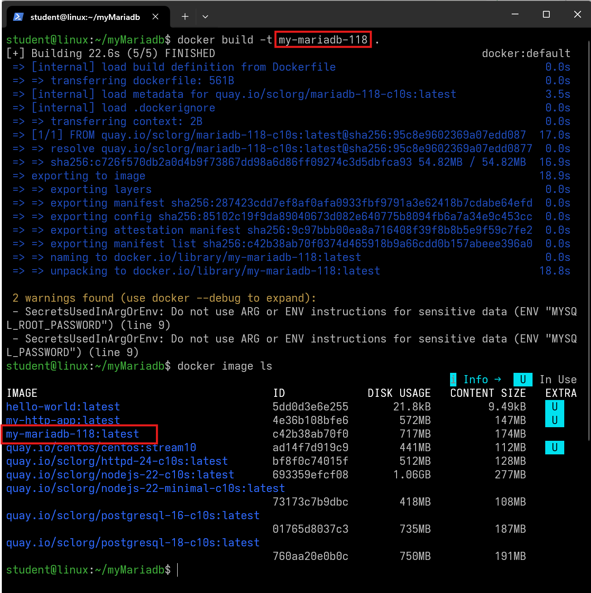
1.3. Open Firewall port 3306
# open firewall 3306
sudo firewall-cmd --permanent --add-port=3306/tcp
# reload
sudo firewall-cmd --reload
# firewall list
sudo firewall-cmd --list-all
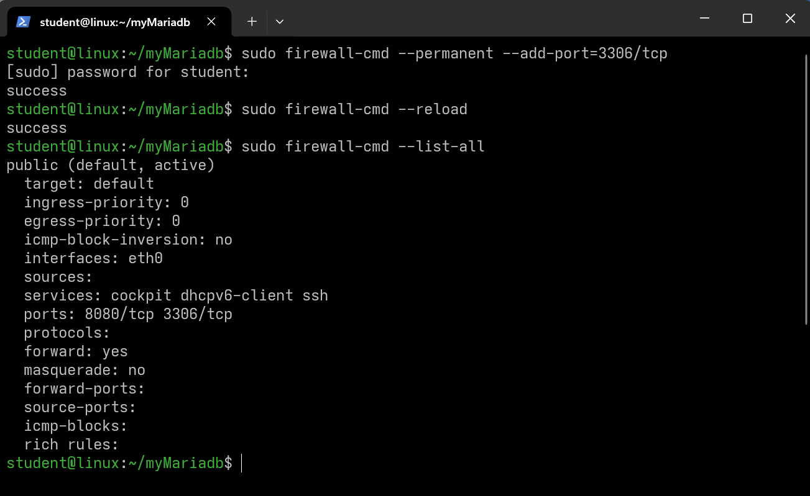
1.4 Create volume
docker volume create mariadb_data
docker volume ls
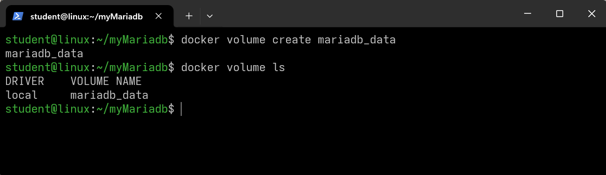
1.5 Run Container
docker run -d \
--name mariadb-118-container \
-p 3306:3306 \
-v mariadb_data:/var/lib/mysql:Z \
my-mariadb-118
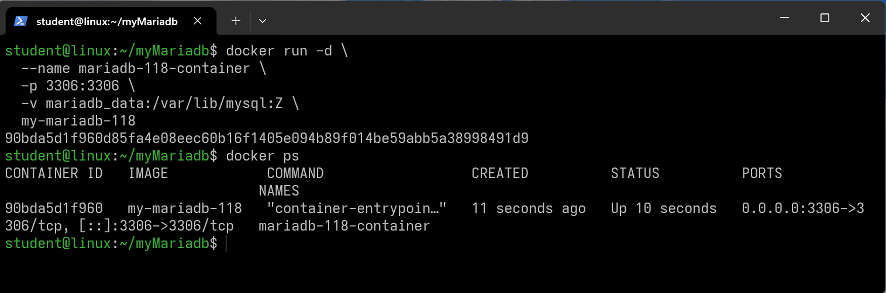
(option: Test Connection data - Dbeaver)
Config with ip address (you may not have same ip address)
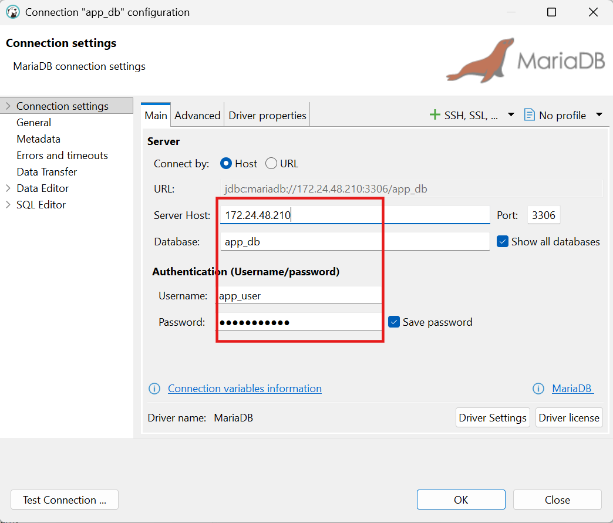
Success Connection
Congratuation you've database for your application
1.6 Create databae
docker exec -it mariadb-118-container mariadb -u app_user -puser_secret
CREATE DATABASE my_test_db;
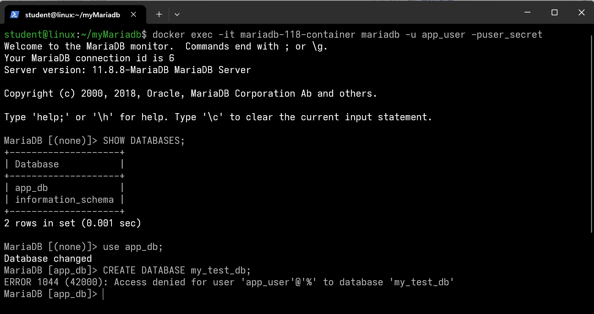
1.7 Give app_user access to the new database
If you want your app_user account to also be able to read and write to this new my_test_db, you need to grant it permissions while you are still logged in as root.
- Run these two commands at the root MariaDB prompt:
- Run without
-p
docker exec -it mariadb-118-container mariadb -u root GRANT ALL PRIVILEGES ON my_test_db.* TO 'app_user'@'%'; FLUSH PRIVILEGES;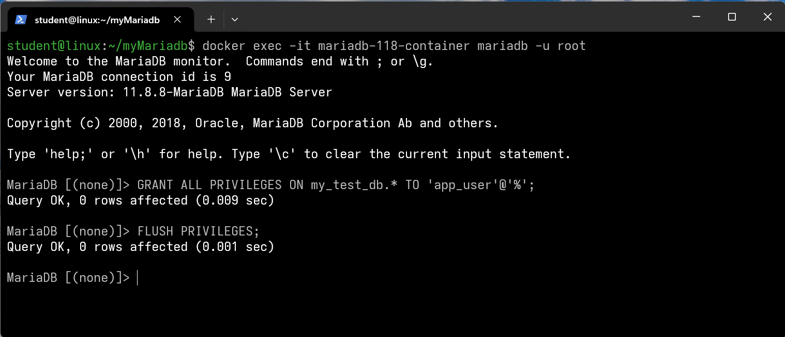
1.8 Re Run 1.6 after add privilage
# login database with app_user
docker exec -it mariadb-118-container mariadb -u app_user -puser_secret
# Create database
CREATE DATABASE my_test_db;
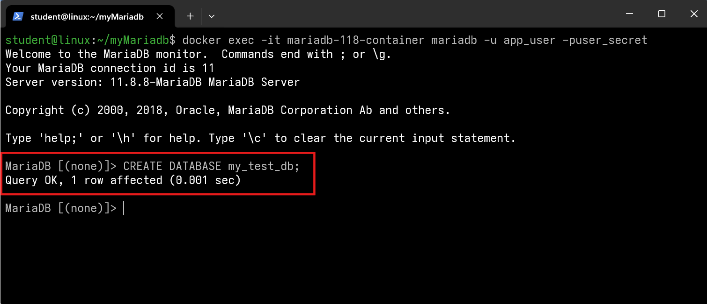
!!note : By default, some MariaDB configurations allow the root user to connect locally (from inside the container) using a Unix socket without a password, regardless of the password variable you set for remote access.
Part 2 Next Learn building from a Dockerfile
objective: - understand role of dockerfile and command to run. - understand project files structure set up. - create basicdocker1 folder as project folder (Remeber there is only one Dockerfile in each of project) - project structure: in this workshop you will create 3 files. Dockerfile, index.html, app.js
your-project/
├── Dockerfile
├── index.html
└── app.js
[Note:] how to check user with run container - from sclorg user who run container name 'default' - here below how to check user after container has been created.
show how to check:
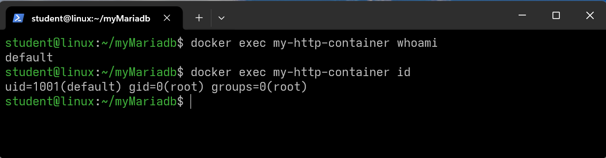
2.1 create folder
# Create project folder holding your project
mkdir basicdocker1
cd basicdocker1
cat > Dockerfile << 'EOF'
## content will go here
EOF
2.2 generate Dockerfile to create docker image
cat > Dockerfile << 'EOF'
FROM quay.io/sclorg/httpd-24-c10s
# --- Switch to root to install packages ---
USER root
# Install additional packages
RUN dnf install -y curl nginx
# --- Create log directories and set permissions for the 'default' user ---
# Added /var/log/nginx to the list of directories created and chowned
RUN mkdir -p /app/logs /run/nginx /var/lib/nginx/tmp /var/log/nginx && \
chown -R default:root /app/logs /run/nginx /var/lib/nginx /var/log/nginx
# --- Switch back to the default non-root user ---
USER default
# Set working directory
WORKDIR /app
# --- Copy Nginx configuration ---
COPY nginx.conf /etc/nginx/nginx.conf
# --- Copy application files ---
COPY index.html app.js /app/
# Expose the unprivileged port
EXPOSE 8080
CMD ["nginx", "-g", "daemon off;"]
EOF
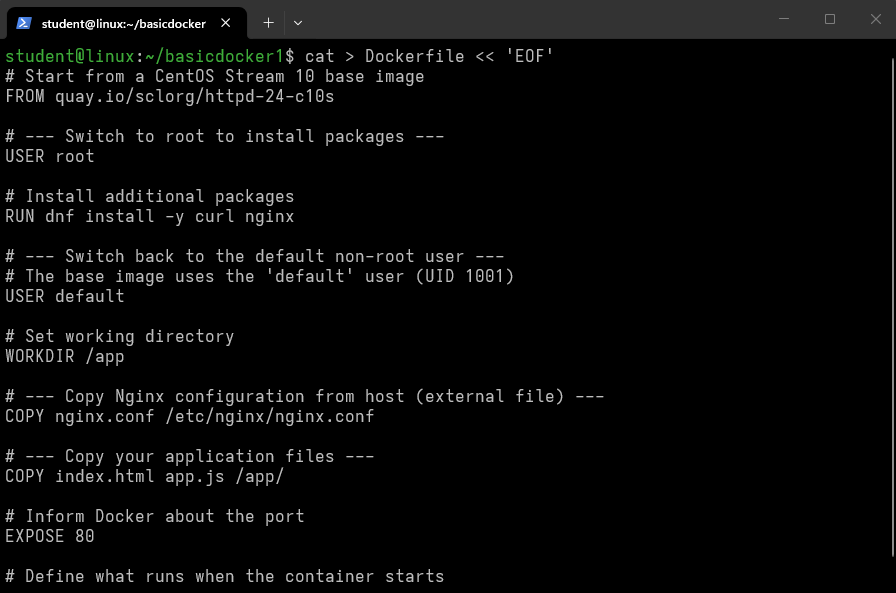
2.3 generate index.html
cat > index.html << 'EOF'
<!DOCTYPE html>
<html>
<head>
<title>Web is Running</title>
<script src="app.js"></script>
</head>
<body>
<h1>🚀 Web is Running!</h1>
<p>Nginx is successfully serving files from <code>/app</code>.</p>
<p>Open your browser console (F12) to see the message from <code>app.js</code>.</p>
</body>
</html>
EOF
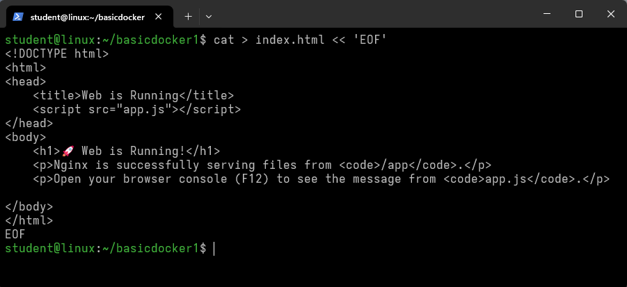
2.4 generate app.js
cat > app.js << 'EOF'
console.log("✅ Web is running! App.js loaded successfully.");
alert("Hello from app.js!");
EOF
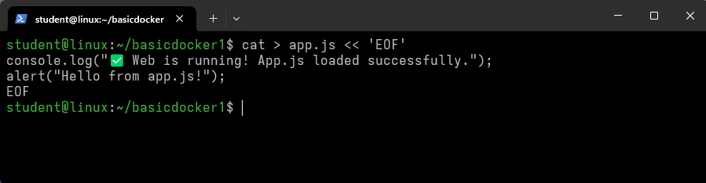
2.5 generate nginx.conf
cat > nginx.conf << 'EOF'
# --- Tell Nginx to write the PID file in the writable directory ---
pid /run/nginx/nginx.pid;
error_log /app/logs/error.log;
events {
worker_connections 1024;
}
http {
include /etc/nginx/mime.types;
default_type application/octet-stream;
access_log /app/logs/access.log;
server {
# Listen on an unprivileged port since we are running as a non-root user
listen 8080;
server_name localhost;
root /app;
index index.html;
location / {
try_files $uri $uri/ =404;
}
}
}
EOF
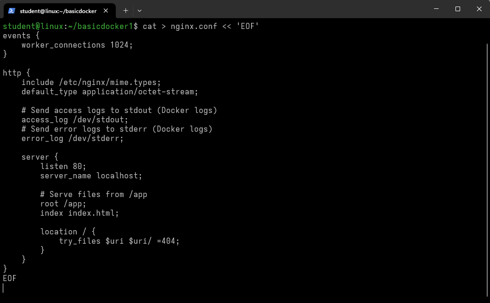
2.6 List output files in project folder
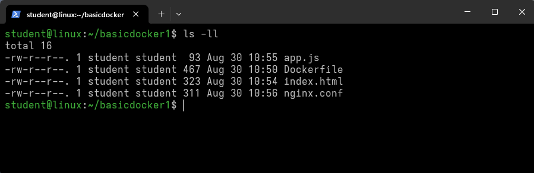
2.7 Explaination
cat > Dockerfile << 'EOF'
FROM quay.io/sclorg/httpd-24-c10s
# --- Switch to root to install packages ---
USER root
# Install additional packages
RUN dnf install -y curl nginx
# --- Create log directories and set permissions for the 'default' user ---
# Added /var/log/nginx to the list of directories created and chowned
RUN mkdir -p /app/logs /run/nginx /var/lib/nginx/tmp /var/log/nginx && \
chown -R default:root /app/logs /run/nginx /var/lib/nginx /var/log/nginx
# --- Switch back to the default non-root user ---
USER default
# Set working directory
WORKDIR /app
# --- Copy Nginx configuration ---
COPY nginx.conf /etc/nginx/nginx.conf
# --- Copy application files ---
COPY index.html app.js /app/
# Expose the unprivileged port
EXPOSE 8080
CMD ["nginx", "-g", "daemon off;"]
EOF
sudo firewall-cmd --zone=public --add-port=8080/tcp --permanent
sudo firewall-cmd --reload
2.9 Build and Run - docker will run command line by line - each time when it run will create readonly layer
# Build the image (do not 'dot' end of command)
docker build -t my-http-app .
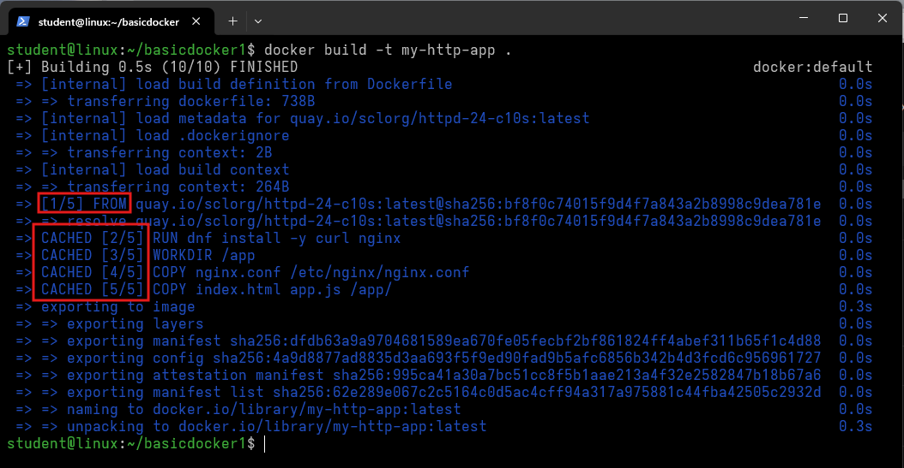
2.10 list your image - verify list ouf output image from command
docker image ls
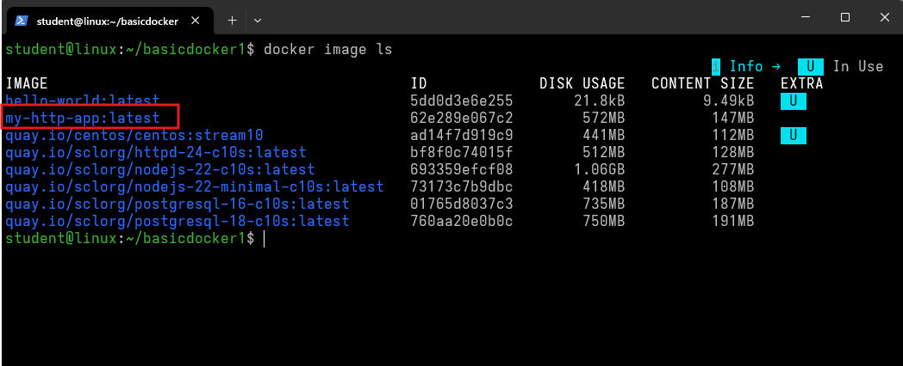
- Special note:
how we can check each layer
docker image history my-http-app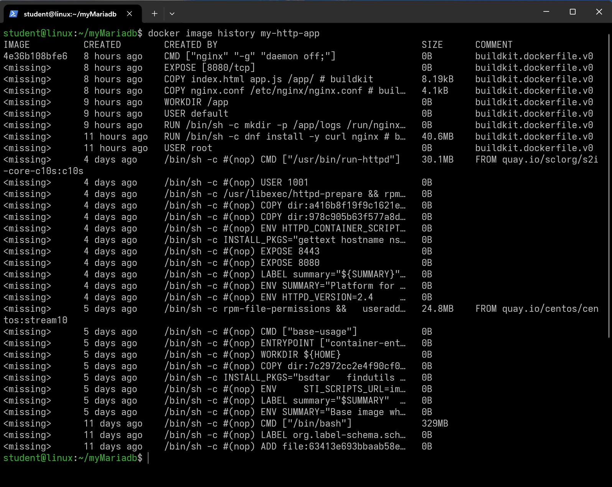
2.11 Create host_logs folder to store log outsite container
mkdir -p ./host_logs
sudo chmod 777 ./host_logs
docker run -p 8080:80 --name my-http-container -v "$(pwd)/host_logs:/app/logs" my-http-app
# after run terminal will hold session - not return terminal to user
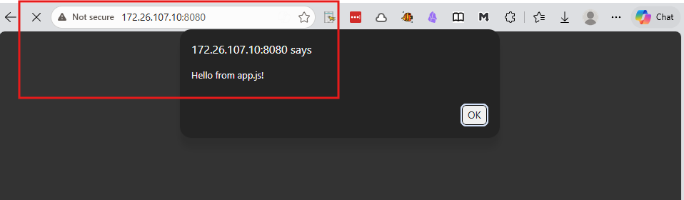
2.12 Open open new terminal
# Run a container from the image
docker exec -it my-http-container /bin/bash
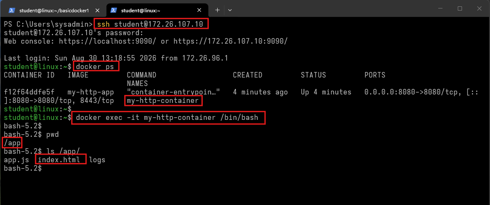
Quiz: Create Postgresql Database from
quay.io/sclorg/> > postgresql-18-c10s
- create project folder myPostgresql
- Create Dockerfile inside folder
- Show command which create docker image with name 'my-postgresql-db' - Show command which create container name 'my-postgresql-container' - enable Firewall rule for postgresql - show screen of command, or any application with prove connecting successfully to container
Reading Note on Docker Technology
Try to understand most core basic of Docker Technology
When the Docker daemon (service) processes a Dockerfile during docker build, it reads the instructions top-down, executing each statement sequentially. Each instruction (except CMD) creates a new read-only layer in the image filesystem, which is cached for future builds.
Here is a comprehensive summary in table format, covering when, how, and what each of your specified commands does:
| Instruction | Execution Phase | Primary Purpose | Creates a Layer? | Key Behavior & Details |
|---|---|---|---|---|
FROM |
Build Time | Sets the base image for subsequent instructions. | Yes (pulls parent layers) | The service checks the local cache; if missing, it pulls the image from the registry. Every valid Dockerfile must start with this. |
RUN |
Build Time | Executes commands (e.g., dnf install) in a new shell. |
Yes | The daemon runs the command, commits the result to a new layer, and saves it. This is where you install system packages and modify files inside the image. |
WORKDIR |
Build Time (affects Runtime) |
Sets the current working directory for subsequent RUN, CMD, COPY, and ENTRYPOINT instructions. |
No (metadata only) | If the directory does not exist inside the temporary container, the daemon automatically creates it. It changes the filesystem path context for the next commands. |
COPY |
Build Time | Copies new files/directories from the build context (your host machine) into the container's filesystem. | Yes | The daemon reads the source files from the host, streams them into the build container, and commits the new filesystem state as a layer. Note: It does NOT support URL fetching (use ADD for that). |
CMD |
Runtime (Container Start) |
Provides default arguments/command for the running container. | No (config metadata) | The daemon does not execute this during docker build. Instead, it stores this command as metadata in the image config. When you run docker run (or the service starts a container), the daemon executes this. Important: If the container runs with a different command (e.g., docker run <image> /bin/bash), this CMD is entirely overridden. |
Additional Context from the Daemon's Perspective
- Layer Caching: The daemon uses a cache to speed up builds. If it finds an unchanged instruction (e.g.,
COPY . .with unchanged files) and a cached layer exists, it will reuse it instead of rebuilding. - Build Context: Before processing
COPY, the daemon receives a compressed "build context" (the directory where you rundocker build).COPYcan only access files within this context for security reasons. - Shell Form vs. Exec Form:
RUN dnf install -y curluses shell form (runs/bin/sh -c).CMD ["nginx", "-g", "daemon off;"]uses exec form (runs directly without a shell). The daemon prefers exec form because it handles signals (likeSIGTERM) properly, allowing for graceful shutdowns.
- Docker Service (Swarm/Compose): If you deploy this image via Docker Service (
docker service create), the service manager ignores theCMDif you specify a command in the service definition, exactly likedocker run.
Basic Docker Commands Cheat Sheet
| Command | Purpose |
|---|---|
docker pull IMAGE |
Download an image from a registry |
docker build -t NAME . |
Build an image from a Dockerfile |
docker run IMAGE |
Create and start a container from an image |
docker run -it IMAGE /bin/bash |
Run interactively with a shell |
docker ps |
List running containers |
docker ps -a |
List all containers (including stopped) |
docker stop CONTAINER_ID |
Stop a running container |
docker rm CONTAINER_ID |
Remove a stopped container |
docker image ls |
List downloaded images |
Important Notes
- Docker commands typically require
sudopermission - You can add your user to the
dockergroup to avoid usingsudo - CentOS Stream 10 images are available primarily through Quay.io, not Docker Hub